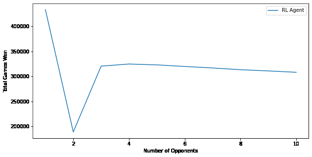

There is no optimal best strategy that can beat all other possible strategies in Colonel Blotto. This means that the best strategy can change depending on the opponent and what strategy the opponent is using. The optimal strategy for playing multiple opponents is almost the complete opposite of the optimal strategies for playing a single opponent. An agent-based model that updates its strategy as it plays the same opponent repeatedly can be used to learn a strategy that would win against this opponent more often than it loses. An example of this type of model is the work of Joseph Christian Noel.
In RL an agent learns by performing actions which change the state of an environment. After each action the agent may also receive a ”reward” from the environment. The goal for the agent is to maximize the cumulative reward that it receives over time. After a series of actions, the agent eventually reaches a goal state or terminal state. The environment is then reset and the agent starts again from an initial state and the process continues. The Markov Decision Process (MDP) is called Markov decision processes.
They run 1 million games of Colonel Blotto to see the performance of the reinforcement learning agent and show the results in Figure 1. While the RL agent eventually wins more games, it takes awhile before the agent begins to start defeating the Random agent regularly. Both agents win games at practically similar rates to start, but after 200 games the better win rate of the agent can already be seen. They also dive deeper and look at the Q-values that the agent has assigned to each of the 66 possible actions, to better understand what strategy it has arrived at.
The 3 numbers for each action signify the number of coins that the RL agent assigns for each of the 3 actions based on their Q-value scores. The actions with the lowest Q-values are the ones where the agent puts all their coins in just one front, guaranteeing a loss when their opponent easily wins the other two fronts. This results in the high win rates that were shown in the earliergraphs. Next they analyze what happens when they extend Colonel Blotto to games of 3 or more players.
Using this method for calculating winning games in Colonel Blotto of games with 3 or more players, they play 1 million games while increasing the number of opponents from 1 to 10. Figure 3 shows that there is a clear drop in games won for the. RL agent when the number. of opponents is.increased from 1-2 to 10, the wins then increase when the. number of. opponents is set to 3, and then stays in that range without much variation. The wins by the RL. agent are average wins of a single Random opponent.
In Figure 4 they show the average count of won games of each Random agent as their number increases. The number of opponents increasing mean that the Random agents are getting fewer wins each. Figure 4 shows that the previous worst strategies against 1 opponent, where the agent sacrifices two fronts, are now the best strategies when playing against 10 opponents. The strategy for the RL agent now is to ensure that it wins one of the fronts against all opponents. This also shows how important it is to properly set the rewards being returned by the environment in which rewards are returned.